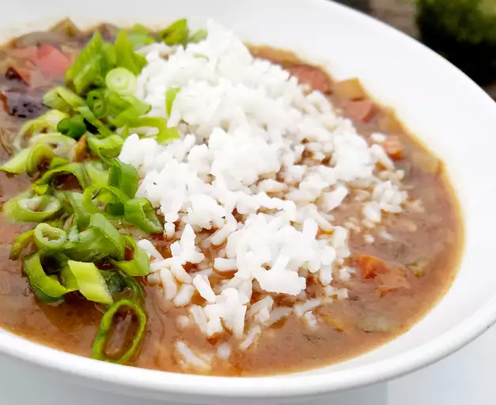

Chicken and Andouille Sausage Gumbo

Ingredients
- 1 ½ pounds andouille sausage, sliced
- 4 (5 ounce) boneless, skinless chicken breasts
- ½ cup canola oil
- ¾ cup all-purpose flour
- 4 stalks celery, sliced
- 1 large onion, chopped
- 1 medium green bell pepper, chopped
- 6 cloves garlic, minced
- 2 quarts hot chicken broth
- 1 tablespoon Worcestershire sauce
- 2 teaspoons Creole seasoning
- 1 teaspoon dried thyme
- 1 teaspoon red pepper flakes
- 2 bay leaves
- 6 stalks green onions, sliced
- 1 teaspoon gumbo filé powder, or to taste
- 2 cups hot cooked rice
Steps
- Cook sausage in a Dutch oven over medium heat, stirring constantly until browned, about 5 minutes. Transfer
sausage to a
bowl; reserve drippings in Dutch oven.
- Cook chicken in drippings over medium heat until both sides browned, 2 to 3 minutes per side. Transfer
chicken to a
bowl; set aside.
- Heat oil in the Dutch oven over medium heat. Add flour; cook and stir constantly until roux is thick and
chocolate
colored, 20 to 30 minutes. Be careful not to burn roux or you'll have to start again.
- Add celery, onion, and bell pepper; cook and stir for 6 minutes. Add garlic; cook until fragrant, about 2
minutes. Stir
in hot broth; bring to a boil.
- Add chicken breasts, Worcestershire sauce, Creole seasoning, thyme, pepper flakes, and bay leaves. Reduce
heat; simmer,
stirring occasionally, until chicken is no longer pink in the center and juices run clear, about 1 hour.
Transfer
chicken to a plate; cool.
- Add sausage to gumbo; simmer for 30 minutes.
- Shred cooled chicken. Add chicken and green onions to gumbo; simmer for 30 minutes.
- Remove gumbo from heat. Discard bay leaves. Sprinkle gumbo with filé powder; stir. Serve gumbo over hot
rice.
Home